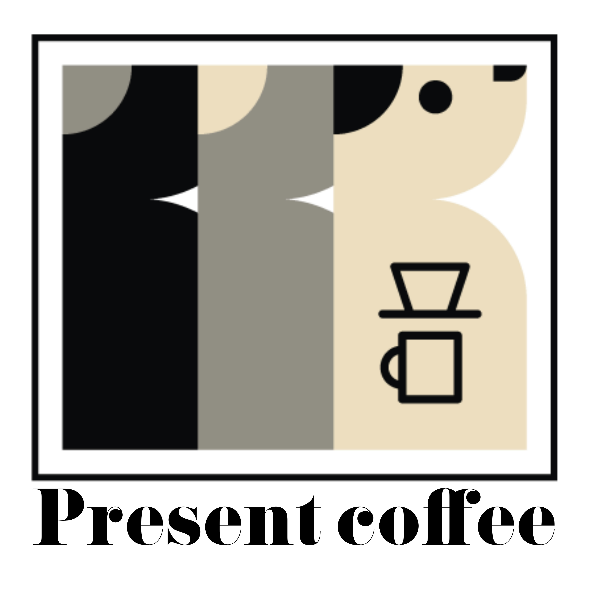

Present coffee
오늘의 운세
유효기간
확인코드
* 화면 캡처 지참 시 3일 이내 사용 가능 (유효일자·코드 확인)
점수
행운 키워드
🎟️
숫자
🧭
방향
🎨
컬러
🍽️
음식
오늘의 행운 음료
💚
캡처 제시 시 추천 음료 1,000원 할인
(사용기한: 23:59 · 유효일자·확인코드 일치 시 적용)
(사용기한: 23:59 · 유효일자·확인코드 일치 시 적용)
페이지 생성 (KST):
지점/캠페인:
지점/캠페인: